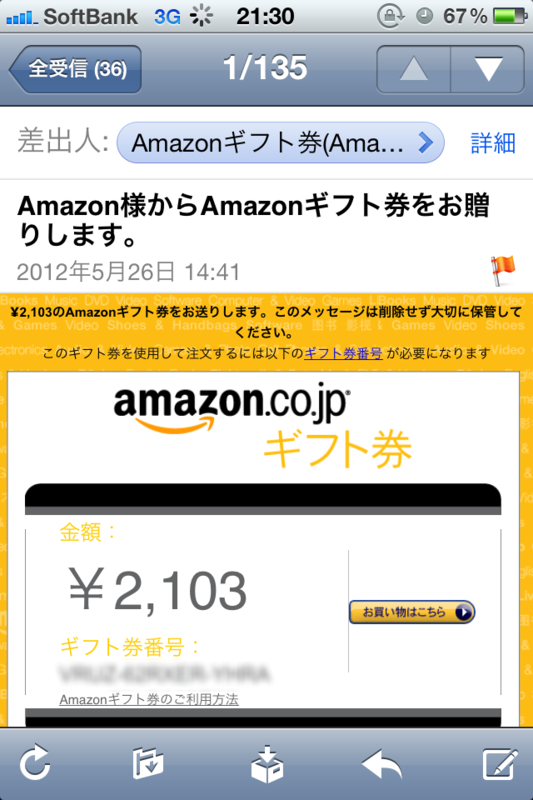

Amazon からお小遣いもらったので、CDを買ってみた。
公開日：

今のブログはともかく、昔やっていたブログは案外アクセスがあって、ごくたまに広告収入がある。けれど、それも Google からが大半。もう7年ぐらい放置しているけれど、 Amazon からもらったのは初めてだった。というのも、 Amazon は5,000円以上収益を上げないと来季に繰り越されてしまう。こうやってギフト券にすれば、少額でももらえるんだけどね。いや、ずっと知らなかったんだけどね。
それにしても、自分のことを Amazon 様と呼ぶ Amazon 様、カッコイイ！
というわけで、臨時収入をゲットしたので、久しぶりに音楽CDを買ってみたりなどした。気になってた CD があったのだ。
")
- アーティスト: さよならポニーテール
- 出版社/メーカー: ERJ
- 発売日: 2012/05/23
- メディア: CD
- 購入: 1人 クリック: 8回
- この商品を含むブログ (9件) を見る
たまたまTVで聞いたのだけど、スピッツの「空も飛べるはず」のカバーが可愛らしい。ほかの曲は……最初は耳障りだったけど、慣れるとまぁまぁよい。今の音楽ってこんな感じなんだなぁ。
それはともかく。
「CDが売れなーい！」と音楽業界が叫び出してからかなりの時間がたちました。確かに、2000年にはシングルCDの生産枚数約10,500万枚、CDアルバムの生産枚数約27,600万枚でしたが、これが2010年にはシングルCDの生産枚数約5,100万枚、CDアルバムの生産枚数約15,600万枚になっています。
最近 CD が売れないんだそうだ。そういえば、自分もあまり買わない。なんでだろうね。
iTunes は使わない。DRMだのなんだのウザそうだから。ツタヤも最近は行かない。引越ししたら、近所になかったから。
けれど、音楽自体は毎日聞いている。お気に入りのヘッドフォンで、この10年貯めた MP3 を延々とループする毎日だ。
なのになんで買わないんだろうね。
「今の音楽ってこんな感じなんだなぁ。」――そうだ、そもそも最近の曲を知らない！ 今回買ったのだって、たまたまTVで聞いていいなーと思って、Twitter でつぶやいたから教えてくれただけで。高校生の頃ならばいざしらず、今は友人同士で音楽の話をすることもない。たまたま気になるモノがあっても、些細な理由で、なんとなく、途中でやめてしまう。意外に高かった、余計なものが付いている、初回限定版が売り切れてた、ショッピングカートに入れたまま、とりあえず「ほしい物リスト」に入れて様子見しよう……etc。